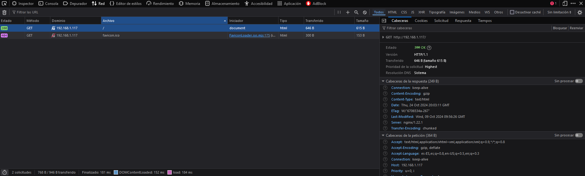

PROXY INVERSO CON NGINX
1. ¿Qué es un servidor Proxy?
Un servidor Proxy es un intermediario entre el cliente y el servidor en ser un Proxy inverso, o un intermediario entre un servidor y el cliente siendo este un Proxy de reenvío.
1.2. Beneficios de un servidor Proxy inverso
Un servidor Proxy nos va a aportar multitud de beneficios:
-
Con el podemos evitar restricciones de navegación estatales o institucionales: Hay ciertas instituciones o estados que no les interesa que accedamos a ciertos sitios de la red, nosotros al usar un servidor proxy y salir a la red a través de el podremos sortear dichas limitaciones.
-
Bloquear acceso a ciertos sitios: De la misma forma dichas instituciones y estados usan dichos servidores para bloquear el acceso a distintos sitios, mediante filtros de contenido.
-
Para proteger tu identidad en línea: Al colocar un servidor Proxy entre tu y la red, no sales a esta misma directamente si no a través del servidor; ya que al acceder a cualquier sitio web se hará con la dirección IP del servidor.
1.3. Beneficios de un servidor Proxy inverso
Como hemos dicho este es el servidor que se encuentra antes del servidor que desea conectarse el cliente.
-
Balanceo de Carga: Si un sitio web recibe muchas peticiones este puede redireccionar peticiones y varios Proxys encargarse de entregar dichas peticiones.
-
Protección contra ataques: Al igual que anteriormente el servidor o servicio no se mostrará a la red con su dirección IP si no que lo hará a través de la dirección IP del servidor Proxy que lo precede, lo que dificultará un ataque directo al mismo.
-
Almacenamiento en caché: Si un recurso es muy usado no hará que un cliente acceda directamente al servidor ya que el Proxy podrá almacenar dicho recurso para poder aumentar el rendimiento.
-
Cifrado SSL: El servidor Proxy también se puede configurar para el cifrado y descifrado de la información de cada cliente, esto ayuda a aliviar carga del servidor origen.
2. CONFIGURACIÓN DEL SERVIDOR
Para poder hacer esto necesitaremos tener dos Servidores Debian, por eso necesitaremos clonar el servidor original; uno de estos se encargará de mostrar los recursos y el otro hará las veces de Proxy.
Ahora en vez de hacer las peticiones al servidor original haremos estas al servidor proxy el cual nos redigirá al servidor.
2.1. Primero necesitaremos cambiar el nombre de la web por el de webserver
Esto implica:
-
Cambiar el nombre del archivo de configuración de sitios disponibles para Nginx

-
Cambiar el nombre del sitio web dentreo de este archivo de configuracion

-
Y borrar el link simbólico de la carpeta sites-enabled
-
-
En el archivo de configuración del sitio web, en lugar de hacer que escuche al puerto 80 que escuche al 8080.
-
Reiniciar Nginx.
Nginx proxy inverso
Ahora cuando queramos acceder a http://ejemplo-proxy, nos reenviará a http://webserver:8080 para esto tendermos que:
-
Crear un archivo de configuración en
sites-availablecon el nombreejemplo-proxy -
Este tendrá la siguiente configuración.

- Pondremos que escuche al puerto 80.
- El nombre que le hayamos puesto al servidor
- Y la directiva
prox_passserá el lugar al que nos redigirá en el que habrá que ponerhttp://IP_server:puerto. - Crear un enlace simbolico del archivo de configuración
webserver-proxyensites-enabled.
3. CCOMPROBACIONES
- Comprobad además la petición y respuesta con las herramientas de desarrollador de Firefox en Xubuntu. Pulsando F12 en el navegador os aparecerán estas herramientas

AÑADIENDO CABECERAS
Para comprobar donde se conecta crearemos una cabecera con el nombre del Host, esto lo haremso añadiendo add_header Host nombre_del_host; esto lo haremos dentro del archivo de configuración en la parte location / {...}.